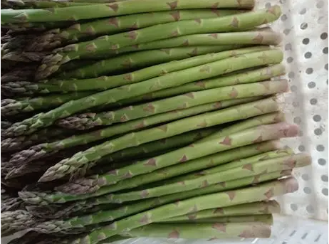
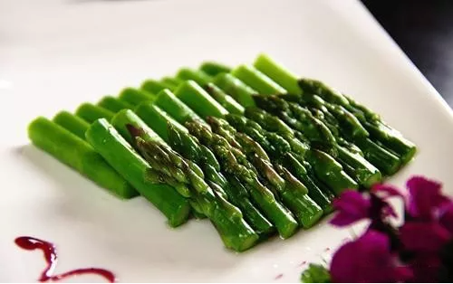

怎么快速提高免疫力？芦笋来帮你！抑制癌症也有奇效！

新鲜采摘的芦笋 - 蔬菜之王
芦笋素有"蔬菜之王"的美称，《神农本草经》中将其列为"上品之上"，称久服轻身益气延年。其嫩茎质地细腻，纤维柔软、风味鲜美、能增进食欲帮助消化，对人体细胞的癌变具有很强的抑制作用，是目前世界上最为有效的防癌保健食品之一。
研究显示：芦笋富含多种氨基酸、蛋白质和维生素，其含量均高于一般水果和蔬菜，特别是芦笋中的天冬酰胺和微量元素硒、钼、铬、锰等，具有调节机体代谢，提高身体免疫力的功效。

芦笋富含多种营养物质
芦笋中含有的天门冬酰胺是一种能抑制癌细胞生长的物质。二十世纪七十年代初，美国一位牙科医生通过食用大量的芦笋治好了自己的眼癌和恶性淋巴癌。1974年化学家卢茨得出芦笋可以治疗癌症的结论。
其含丰富的抗癌元素——硒，可阻止致癌物质过氧化物和自由基形成，通过抑制癌细胞中脱氧核糖核酸合成，阻止癌细胞分裂与生长，同时刺激机体免疫功能，提高对癌细胞抵抗力；含有丰富的叶酸，大约5根芦笋含100微克，已达到每日需求量，可使细胞生长正常化，具有防止癌细胞扩散功效。
推荐食疗小配方—茄汁芦笋
【组成】
芦笋200克，番茄酱30克，白糖、精盐、味精各适量
【制法】
1. 芦笋洗净切丁
2. 炒锅上火，放油烧热
3. 放入芦笋丁煸炒后，倒入少量清水焖至熟
4. 加番茄酱30克及白糖、精盐、味精各适量调匀
5. 出锅淋麻油即成
【服法】
佐餐当菜，随意服食
【功效】
扶正解毒，抗癌。用于放、化疗期，提高免疫功能。